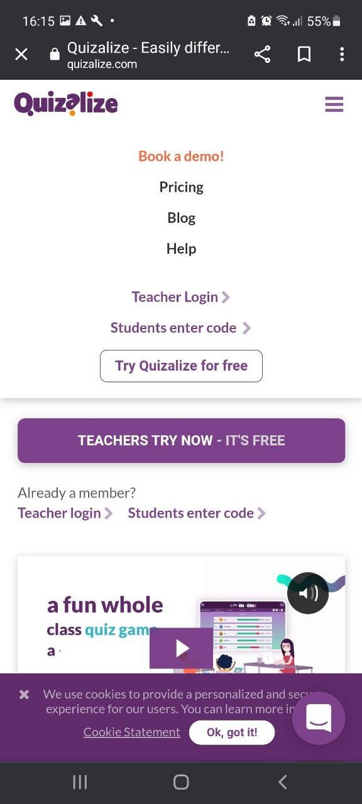
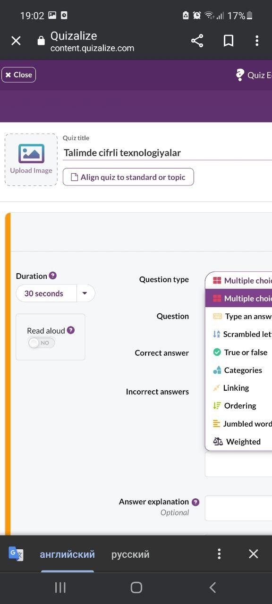

Oqıwshılar Quizalize saytına ótip ózleriniń noutbukları, planshetleri yaki smartfonları arqalı test sorawlarına juwap beredi.
13-TEMA
HTTPS://WWW.QUIZALIZE.COM/ DE INTERAKTIV VIKTORINALAR JARATIW USHIN MOBIL SERVISLER.
Quizalize - bul sorawlar hám viktorinalar jaratıw servisi.
Servistiń mazmunı:
Durıs juwaplar ushın olar ochko aladı. Uliwma esap hár bir oqıwshıǵa shaxsıy test aqırında kórsetiledi.
Servis múmkinshilikleri
Serviste topar jumısın shólkemlestiriw múmkinshiligi:
Oqıtıwshı klassta viktorina menen birgelikte jumıstı shólkemlestiriwi múmkin: úlken ekran yamasa interaktiv doskadan paydalanıp.
Tálim iskerligi ushın servis múmkinshilikleri:
Servis járdeminde siz mektep oqıw programmasınıń túrli temaları boyınsha test hám viktorinalar jaratıwıńız, intellektuallıq oyınlar shólkemlestiriwińiz hám klassta oqıwshılar ortasında ekspress sorawnamalar ótkeriwińiz, olarǵa úy tapsırması retinde viktorina tapsırıwdı usınıwıńız múmkin.
Servis materialları menen qay jerde bólisiwińiz múmkin:
Jaratılǵan viktorina (test) social tarmaqlarda (Facebook, Twitter, Pinterest) hám elektron pochta arqalı bolisiwińiz múmkin.
Quizalize basqa paydalanıwshılar tárepinen jaratılǵan viktorinalardı da usınadı. Olardan geyparaları biypul, basqaları bolsa bir yamasa eki dollarǵa satıladı.
Óz viktorinalarıńızdı jaratıw hám oynaw ulıwma biypul.
Quizalize, basqa platformalar menen salıstırǵanda, úlken abzallıqlarǵa iye.
Kóplegen basqa platformalarda oqıwshılar bir waqtıniń ózinde oynawı tiyis.
Quizalize-de oqıwshılar bir waqıtta qatnasıwı shárt emes. Olar tapsırmalardı ózlerine qolay waqıtta orınlawı múmkin.
Oqıtıwshı kompyuterge baylanbaǵan. Ózine qolay waqıtta programmaǵa kiredi hám oqıwshılar tárepinen islengen test nátiyjelerin kóredi.
Quizalize servisinde bir waqtıniń ózinde úlken ekran yamasa interaktiv doska járdeminde sabaqta qatnasıw múmkin.
Quizalize mobil servisinde interaktiv viktorinalar jaratıw
Mobil telefonda https://www.quizalize.com/ ǵa Brawzer arqalı kiremiz.
Bul jerde siz Teacher Loginnan kirip interaktiv viktorina jaratıwıńız múmkin. Students enter codetan kirip oqıwshılar kirip tapsırmalardı orınlawı múmkin.
13.1-súwret Quizalizeǵa kiriw beti
Interaktiv viktorina jaratıw ushın Teacher Login kirip, siziń Google da akkauntıńız bolsa siz Log with Googledan kirseńız boladı. Explore bólimi Resources (resurslar), Library(biblioteka), Creat(jaratıw, yaǵnıy interaktiv viktorinalardı jaratıw). My classes bóliminde jaratılǵan klasslar yaki +Add a new class járdeminde taza klass jaratıw múmkin.
13.2-súwret Oqıtıwshınıń jumıs beti
Create ge kirsek bizde tómendegi ayna ashıladı. Bunda siz Creat assessments(Bahalardı jaratıw) hám Creat learning resources( Oqıtıw resursların jaratıw) bólimlerin kórseńiz boladı. Biz interaktiv viktorinalardı jaratıw ushın Creat assessments bólimindegi Creat new quiz (Jańa test jaratıw) túymesin basıp kiremiz.
3-súwret Creat aynası
13.3-súwret Quiz Editor aynası
Bizde Quiz Editor aynası ashıladı. Bul jerde Quize title(viktorina yaki test atı), Align quiz to standart or topic(standart yaki tema boyınsha testti tegislew) bul inglis tilin úyretiwde júda qolaylı bıraq biz bunı paydalanbaymız , Duration(dawamıylıǵı) 30 sekund bul viktorinaǵa berilgen waqıt, Read aloud(dawıstı shıǵarıp oqıw) bul inglis tilin úyretiwde júda qolaylı bıraq biz bunı paydalanbaymız, Question type (soraw túri) bul bólimde soraw túrin saylaymız biz Type an answer (Juwaptı kiritiń) túrin saylaymız, Question(soraw) bul bólimge sorawımızdı kirgizemiz, Correct answer(durıs juwap) bul bólimge durıs juwaptı kirgizemiz +Add an answer(Juwap qosıw) túymesi járdeminde qosımsha durıs juwaplar bolsa solardı jazamız, Answer explation( Juwaptı túsindiriw) bul bólimde juwapqa túsindirme beriw, Subtopic(podtema) bul bólimde soraw qaysı temadan alınǵanlıǵı, +Add a new question(Jańa soraw qosıw) túymesi járdeminde jańadan sorawlar qosıladı.
13.4-súwret Quiz Editor aynasınıń toltırılıwı hám viktorinamızdıń saqlanıwı
Barlıq sorawlarımızdi kirgizip bolıp Save to my library (Meniń bibliotekama saqlaw) túymesi járdeminde viktorinanı ózimizdiń bibliotekamızǵa saqlap alamız, al Save and give to class(saqlań hám klassqa beriń) túymesi járdeminde saqlaysız hám bermekshi bolǵan klassıńızdı saylap beresiz.
Klasstı jaratıw
My classes bóliminde +Add a new class járdeminde taza klass jaratıw múmkin.
Nátiyje:
Oqıwshılardıń joybar iskerligi: joq
Testti komanda da orınlaw múmkinshiligi: joq
Oqıwshılar óz úskenelerinen paydalanıp tapsırmalar menen tanısıwı múmkin: awa
Oqıwshılarde mobil úskenelerńnńl barlıǵı: awa
Úy wazıypası rejimi: awa
Orıs tilindegi versiyanıń barlıǵı: joq
Bir neshe variantlardan bir tuwrı juwaptı tańlaw : awa
Bir neshe tuwrı tańlaw : Joq
Qısqa jazba juwaptı kirgiziw: joq
Operativ rejimi: Joq
Sorawǵa qosımsha maǵlıwmat : joq
Túsindirmeler bar ekenligi: awa
Soraw hám tapsırmalar
1. Quizalize – bul?
2. Oqıwshılar Quizalize saytınan qanday úskeneler menen paydalanıwı múmkin?
3. Servis múmkinshiliklerin atap ótiń.
4. Serviste topar jumısın shólkemlestiriw múmkinshiligi.
5. Tálim iskerligi ushın servis múmkinshilikleri.
6. Servis materialları menen qay jerde bólisiwińiz múmkin?
7. Interaktiv viktorina jaratıw ushın qaysi loginnen paydalanıwı kerek?
8. Klasstı jaratıw qalay ámelge asırıladı?